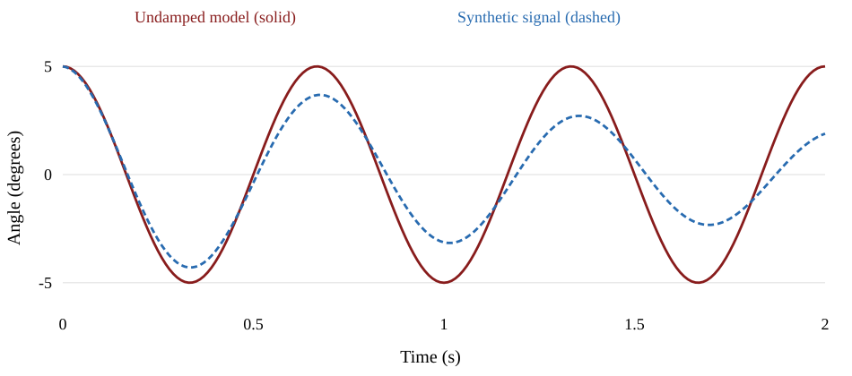

Laboratory report guide
A report another engineer can follow
Explain what you measured, how you compared it with a prediction, and what the evidence supports.
Download the Word report template · Report-writing lecture
Report length and section purpose
| Section | Template allocation | Main purpose |
|---|---|---|
| Abstract | Maximum 10 lines | Purpose, method, key finding, implication |
| Introduction | 1 page | Theory, experiment, and testable objective |
| Method | 1 page | Enough detail to reproduce the measurement |
| Results | 3 pages including figures | Observed behavior and processed measurements |
| Comparison | 1 page | Prediction and experiment on the same basis |
| Discussion | 1 page | Discrepancies, uncertainty, and limitations |
| Conclusions | 1 page | Quantitative answer and the main lesson |
References and optional appendices have no stated page limit. Follow any assignment-specific limit on Canvas.
Introduction and reproducible method
Introduction
State a testable objective. Give the governing equation, define symbols, and explain assumptions.
Method
Describe the actual apparatus, calibration, sampling settings, initial conditions, and repeated runs.
Analysis record
Explain processing choices, fitting intervals, and parameter sources so another person can repeat the analysis.
Example objective: test how release angle changes agreement with the small-angle pendulum model.
A concise, quantitative abstract
Purpose and method
We tested a small-angle pendulum prediction using angle histories from video.
Key result
The measured frequency was 1.47 Hz, compared with a predicted 1.50 Hz, a 2.0% difference.
Meaning and limit
The agreement supports the model for this case. The discrepancy requires an uncertainty assessment.
Illustrative wording and invented teaching values. An actual abstract must use your own results. Maximum 10 lines.
Results: the measured behavior
Observation
Describe what the measurements show, with quantities and units.
Evidence
Use figures or tables that answer the experimental question. Identify conditions and repeated runs.
Traceability
Distinguish measured data, processed measurements, and simulation predictions.
Example observation: successive positive displacement peaks decrease over time.
Readable, exported figures
Figure requirements
Numbered figure, descriptive caption, axis labels with units, legible text, and clear legend.
Export
Use high-resolution PNG, EPS, or PDF. Do not use screenshots of MATLAB or Python figure windows.
Final check
Inspect the submitted PDF at the size the reader will use.
A figure that supports a comparison

Figure 1. Illustrative angle histories: undamped model and synthetic decaying signal, 5° initial angle, 50 samples/s.
Comparison: a fair test of the model
Same basis
Use matching units, initial conditions, time origin, and system parameters. Explain the theoretical solution.
Quantitative comparison
Compare period, frequency, amplitude, phase, damping, or another quantity relevant to the objective.
Parameter honesty
State which parameters you measured, assumed, or fitted. A fit to the same data is not independent validation.
Relative discrepancy = | measured − predicted | / | predicted | × 100%
Use an appropriate absolute or scaled metric when the predicted value is zero or very small.
Uncertainty and acceptable agreement
Measurement uncertainty
Consider calibration, resolution, repeatability, timing, and tracking choices.
Model uncertainty
Consider uncertain parameters and omitted physics, such as friction or large-angle effects.
A justified conclusion
Report what each uncertainty means. Compare the discrepancy with a consistent uncertainty estimate.
T = Δt / ncycles uT ≈ uΔt / ncycles
Simplified timing example with exact cycle count. Longer timing intervals do not remove calibration bias.
Discussion: explanations tied to evidence
Observed difference
The measured oscillation envelope decays while the undamped prediction keeps constant amplitude.
Plausible mechanism
Friction or drag could dissipate energy. The present comparison does not identify their separate contributions.
Discriminating check
Compare decay across configurations and test whether the chosen damping model describes the envelope.
Replace “human error” with a specific mechanism, its expected effect, and a way to check it.
Conclusions, references, and appendices
Conclusions
Answer the objective with the key numerical result, supported limitation, and a useful improvement.
References
Cite sources where used. Include the lecture notes at minimum and list every cited source.
Appendices
Add supporting calculations or extra data only when needed. Keep essential evidence in the main text.
Combined reports connect related experiments
Labs 2 and 3
Compare one angle with two coupled angles. Discuss model assumptions, initial conditions, and the limits of prediction.
Labs 4 and 5
Relate free-response frequency and damping to the forced response. Account for configuration changes.
Organization
Use one abstract and conclusion, with experiment-specific subsections and an explicit synthesis.
Suggested organization within the required template. Do not assume the page allowance doubles.
The report rubric: ten equal criteria
| Each criterion is 10% of the report grade | What to check |
|---|---|
| Complete sections / overall aesthetic | Required organization and consistent formatting |
| Clear figures / abstract | Readable evidence and a concise, quantitative summary |
| Data analysis / introducing the theory | Traceable processing and defined governing equations |
| Introducing the experiment / comparison with theory | Physical context and a fair model-data comparison |
| Discussion / meaningful results | Evidence-based interpretation and an answer to the objective |
This table groups the ten original rubric criteria into pairs. Each individual criterion remains worth 10%.
Before submission
- All required sections are present, with group names ordered as the template specifies.
- The abstract, figures, and conclusions give consistent numerical results.
- Equations define symbols and assumptions. Parameter values include units and sources.
- The method records calibration, acquisition settings, initial conditions, and analysis choices.
- Measured data and model predictions are clearly distinguished.
- Every figure has a number, descriptive caption, readable labels, and units.
- Discrepancies have a quantitative comparison and a discussion of uncertainty.
- References include the lecture notes and all other sources used.
- The PDF is legible, follows the assigned page limits, and opens correctly.
- You can explain your own calculations, code, and conclusions.
Submit on Canvas, not through GitHub. Reports are due at 11:59 PM and lose 25% for each day or partial day late.